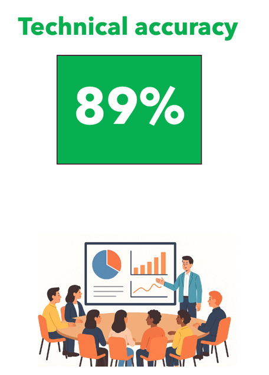
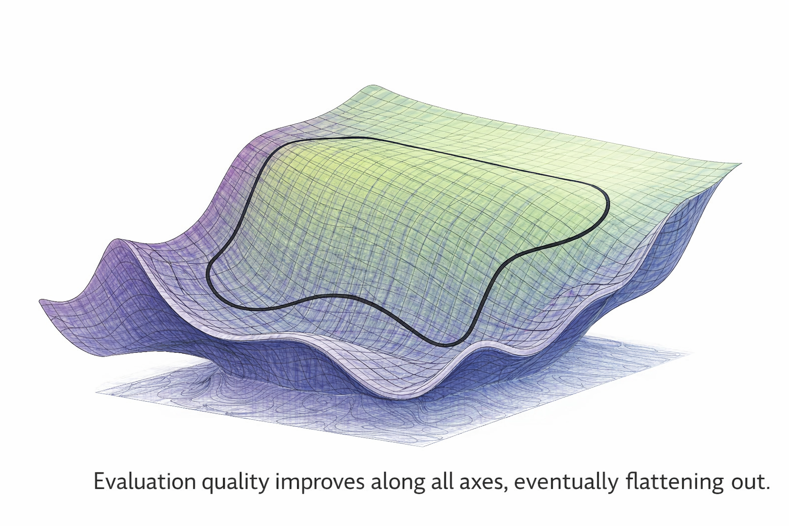

Iterating in the Dark:
Organizational Blindness in AI Evaluations
A five-part series
Executive Summary
- In agentic AI, evaluation is the bottleneck. Agentic AI systems can iterate on development far faster than organizations can learn from them.
- Evaluation is hard because it is an experiment design problem, not a software testing problem. Each evaluation embeds many consequential design decisions that can dramatically change the apparent outcome.
- Most organizations are neither equipped nor incentivized to manage agentic evaluation. Tooling, methods, training, and reporting structures systematically hide uncertainty.
- This is a change leadership can make today. The questions executives ask shape what teams feel able to report.
- This is fixable — failure modes are not inherent to AI. They require better evaluation practices, reporting standards, and decision discipline.
You have all been in this room.
A slide goes up. There's a metric—"Technical Accuracy", a number: 89%, and a color—green.
Getting these metrics, numbers, and even the colors "right" are foundational to the success of a product.

This output is very consequential. Not only does it determine ship/no-ship decisions, but it tells engineers where to focus their energy, where to improve. The metrics act like a loss profile and give us axes along which we need to improve our product.

And as AI takes more of a leading role in development, getting the right metrics and the right measures is central to effective product improvement iterations — possibly even automating the entire process.
This series explores a structural problem in how organizations evaluate AI systems: we are building highly consequential systems, making decisions based on evaluation numbers, and systematically both underestimating and ignoring the bias and uncertainty in those numbers.
The Series
A Structural Flaw in Judgment
Why "89% accuracy" might be meaningless—or worse, misleading. The three facets: visibility, culture, and action.
The Cost of Ignorance
Wasted cycles, misallocated portfolios, and production failures that were predictable all along.
Uncertainty vs Variability
The critical distinction between uncertainty (reducible) and variability (real differences).
Better "Evals" Beats Better Dev
Why better eval leads to better quality even without touching the system.
From Value to Scorecards
Breaking down value into scorecard dimensions to define axes of iterative improvements.
Where and Why "Eval" Goes Wrong
From sample size effects to noisy LLM judges. Each source alone can flip your decisions.
Simple Actions that Work
Addressing visibility, action, and culture. Practical tools and methodology assistants.
Key Themes
Every score has two error terms: bias (systematic) and noise (random). Bias is harder to see but often more dangerous.
Selection turns noise into bias: Even unbiased evaluations become optimistic when you pick winners.
Small differences are noise: A 4-point gap gives ~24% chance of picking the wrong system.
Uncertainty is larger than you think: 100 examples at 82% gives a ~16-point-wide 95% CI.
Better eval beats more dev: Measurement enables better decisions—before touching agents.
Culture matters: Point estimates feel decisive. Pretending certainty is the real weakness.
Who This Is For
- Engineering leaders making ship/no-ship decisions
- ML/AI practitioners designing eval pipelines
- Product managers interpreting quality numbers
- Executives who need the right questions
Want a hands-on playbook for this?
I teach two 100% free, in-person (with remote options) practitioner courses:
Shipping AI Systems
Designing Large Scale AI SystemsData Health + RAG
Knowledge Management for AI Systems
Materials available as courses start in mid-February.
Contact me for free remote attendance (LinkedIn · X).
"Any measurement, without knowledge of the uncertainty, is meaningless."
— Walter Lewin, MIT
Have 20 seconds?
What's the one thing you'd change about AI evaluation or reporting to make it reliable and actionable?